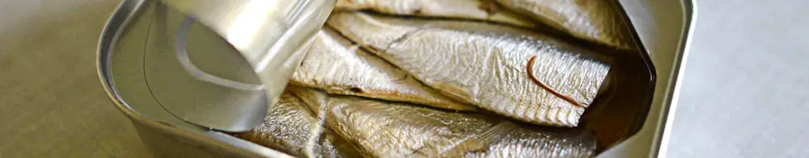

Cara Memasak Sarden Langsung Diatas Kompor Induksi Tanpa Alat Masak

Siapa yang sering punya stok makanan siap saji, seperti sarden, korned, dan sosis? Aneka makanan ini sangat memudahkan kita. Terutama, disaat kita sudah lapar serta ingin memasak yang cepat dan praktis saja. Aneka makanan ini juga kerap hadir di kamar-kamar kos, karena dapat diolah dengan sangat mudah. Itulah mengapa, aneka makanan siap masak ini sangat populer untuk memudahkan dan menyamankan kita.
Memasak Ikan Sarden dalam Kemasan Kaleng
Ada banyak cara untuk memasak dan menikmati sarden. Beberapa dari kita mungkin akan menumis bawang putih dan bawang merah cincang, menambahkan potongan tomat, cabai, garam, gula, dan penyedap rasa sebelum menuangkan sarden ke atas panci pemanas. Beberapa dari kita, mungkin cukup memanaskan sarden dan kemudian langsung menikmatinya dengan sepiring nasi hangat ditambah kerupuk dan potongan timun atau selada.
Penggunaan Kompor Induksi Untuk Bahan Kaleng
Kali ini, mari kita bahas serba-serbi memanaskan sarden langsung menggunakan kompor induksi. Sebelumnya, sarden dikemas dalam kaleng berbahan besi yang menempel di magnet sehingga dapat untuk digunakan secara langsung di atas kompor induksi. Oleh karenanya, kita bisa langsung saja meletakkan kaleng sarden tersebut di atas kompor induksi, tanpa harus memindah isi sarden ke dalam panci terlebih dahulu.
Mencegah Kaleng Sarden Meledak Saat Dimasak
Namun, ada yang perlu diperhatikan bila kita mau memanaskan sarden langsung di dalam kalengnya. Agar sarden tidak meledak saat dipanaskan, kita perlu membuka kaleng sarden terlebih dahulu sebelum memanaskannya. Tujuannya, agar uap dari sarden dapat menemukan jalan keluarnya. Hal ini penting agar tekanan didalam kaleng sarden tidak terlalu tinggi yang pada akhirnya dapat menyebabkan kaleng sarden meledak saat dipanaskan
Setelah kaleng sarden dibuka, kita bisa lantas meletakkannya di atas kompor induksi. Sebagai catatan, pada kompor induksi yang digunakan oleh tim Mas Tukang, kita bisa meletakkan 3 kaleng sarden sekaligus. Wah, cukup membantu kalau keluarga sudah sangat lapar dan butuh makanan cepat, ya.
Setelah meletakkan kaleng sarden di atas kompor induksi, kita bisa mengatur pemanas induksi. Nah, berhubung kaleng sarden ini berukuran sangat tipis, kita perlu berhati-hati agar tidak menggunakan panas berlebih. Agar sarden tidak gosong, kita bisa menggunakan panas minimal atau mode "Soup" pada kompor induksi. Setelahnya, cukup tunggu beberapa saat dan sarden pun akan mendidih, siap untuk dinikmati bersama nasi hangat dan kerupuk.
Video Sarden Dimasak Diatas Kompor Induksi
Nah, bagaimana, mudah bukan memanaskan sarden menggunakan kompor induksi? Video singkat tentang memasak sarden menggunakan kompor induksi dapat ditonton di bawah ini. Semoga bermanfaat!